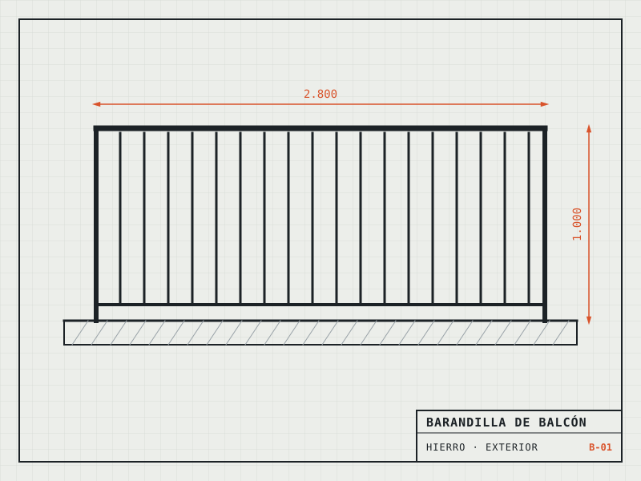
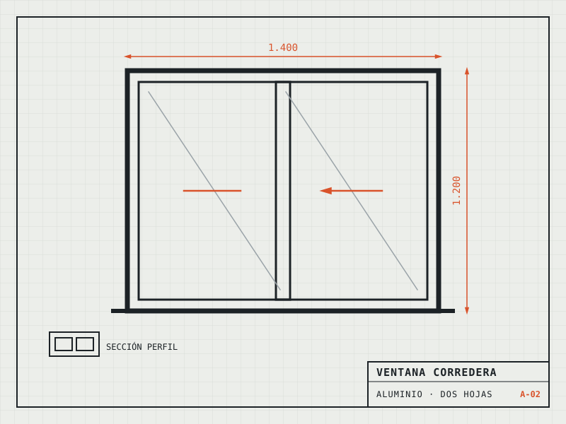
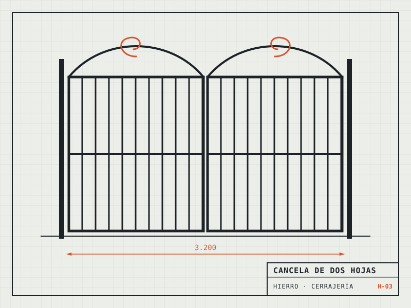
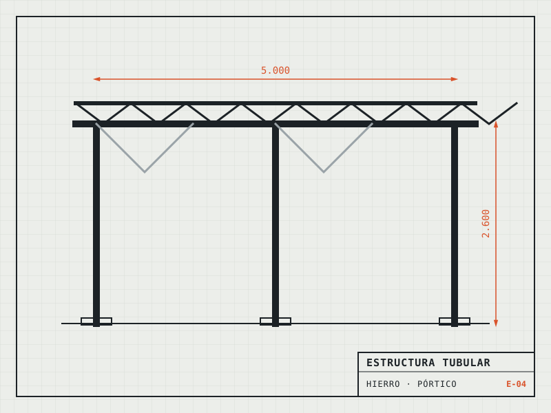
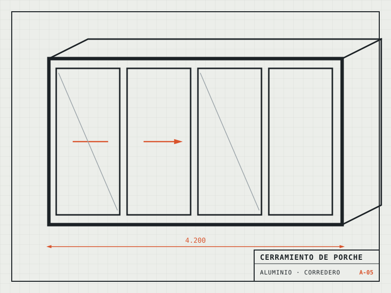
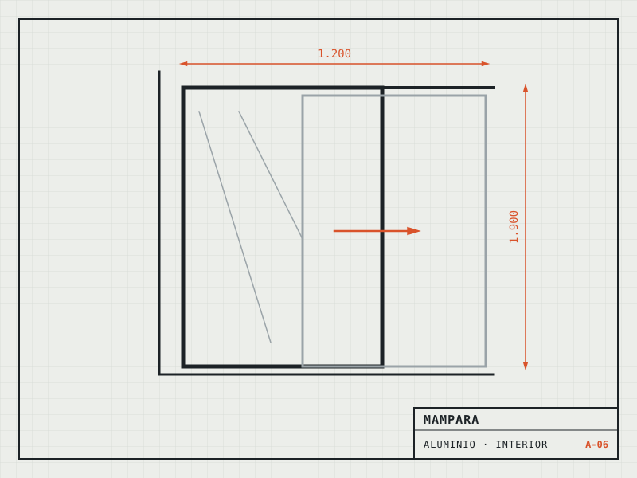
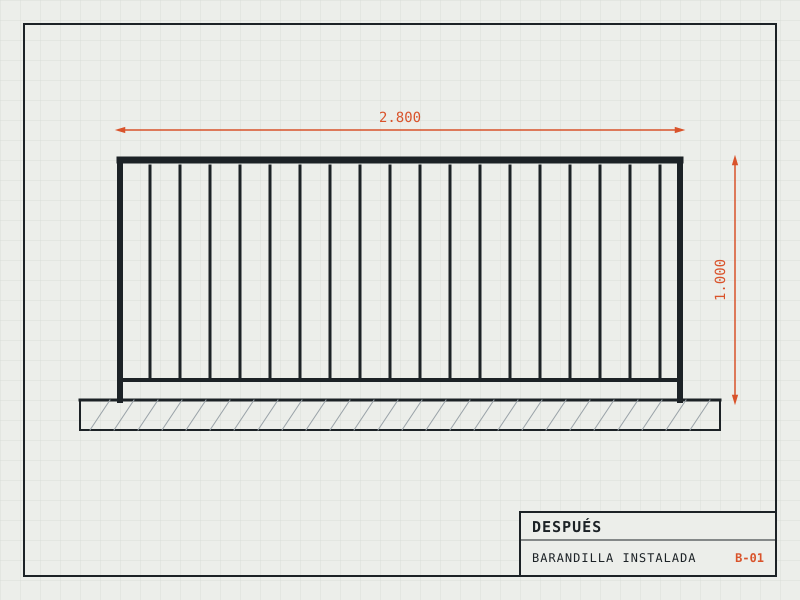
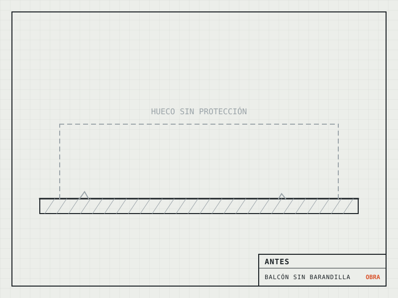

Polígono Ind. Solúcar · Sanlúcar la Mayor · Sevilla
Hierro y aluminio,
a la medida
de tu obra.
Carpintería metálica de interior y exterior: cerramientos, barandillas, estructuras, mamparas y cerrajería, en múltiples acabados. Te preparamos el presupuesto sin compromiso.
- 4,5 11 reseñas
- Materiales
- Hierro y aluminio
- Presupuesto
- Gratisy sin compromiso
01 · Servicios
Dos materiales.
Un mismo taller.
Trabajamos el hierro y el aluminio para interiores y exteriores, en múltiples acabados. Elige qué necesitas y te decimos cómo lo resolvemos.
-
A
Aluminio
Carpintería de aluminio
Ventanas, puertas y otros elementos de aluminio para exterior e interior, en múltiples acabados.
-
B
Aluminio
Cerramientos
Cerramientos de aluminio para porches, terrazas y otros espacios.
-
C
Aluminio
Mamparas
Mamparas a medida para baño y para separar espacios interiores.
-
D
Hierro · Aluminio
Barandillas
Barandillas para balcones, escaleras y terrazas, de interior y de exterior.
-
E
Hierro
Estructuras y estructuras tubulares
Estructuras metálicas y tubulares fabricadas a medida.
-
F
Hierro
Cerrajería y cerrajería artística
Puertas metálicas, cancelas y piezas de hierro con trabajo decorativo.
¿Tu trabajo no aparece en la lista? Cuéntanoslo y te decimos si podemos hacerlo.
02 · Trabajos
Lo que sale
de nuestro taller.
Cada encargo empieza en un plano y termina instalado. Filtra por tipo de trabajo.






Antes / después
Del hueco a la barandilla.
Desliza para ver el cambio. Así es como mejor se entiende un trabajo bien hecho.


Ilustraciones de muestra. En la web definitiva, fotos reales de vuestros trabajos.
03 · Cómo trabajamos
De la foto
al trabajo terminado.
- 01
Nos lo cuentas
Mándanos por WhatsApp unas fotos del sitio y las medidas aproximadas. Con eso ya podemos orientarte.
- 02
Presupuesto sin compromiso
Te decimos qué solución encaja, en qué material y cuánto cuesta, antes de empezar nada.
- 03
Fabricación a medida
Cada pieza se hace para tu hueco, no sale de un catálogo.
- 04
Trabajo terminado
Te entregamos el trabajo listo para usar, en interior o en exterior.
04 · El taller
Una empresa del gremio, cerca de tu obra.
JJ Carpinsur es una empresa de carpintería metálica con sede en el Polígono Industrial Solúcar de Sanlúcar la Mayor, en pleno Aljarafe sevillano.
- 4,5 sobre 5 en GoogleCon 11 reseñas de clientes. Ver en Google
- Hierro y aluminioLos dos materiales en un mismo taller: no tienes que buscar a otro según el trabajo.
- Interior y exteriorDe la mampara del baño a la cancela de la entrada.
- Presupuesto gratisSin compromiso, para que decidas con los números delante.
05 · Presupuesto
Pide tu presupuesto en un minuto.
Marca lo que necesitas y te abrimos WhatsApp con el mensaje ya escrito. Solo tienes que añadir las fotos.
06 · Dónde estamos
En el Polígono Solúcar, Sanlúcar la Mayor.
Si tu obra está en otro pueblo, pregúntanos y te decimos si llegamos.
C. Blasco de Garay, 5 · Pol. Ind. Solúcar
41800 Sanlúcar la Mayor (Sevilla)